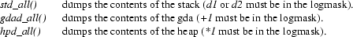

ABSTRACT
Eddo de Groot
Leo van den Berge
Dick Grune
Faculteit Wiskunde en Informatica
Vrije Universiteit, Amsterdam
This document describes the implementation and usage of a new interpreter for the EM machine language. This interpreter implements the full EM machine and can be helpful to people writing new front-ends. Moreover, it can be used as a thorough testing and debugging tool by anyone familiar with the EM language.
A list of all warnings is given in appendix A; appendix B is a simple tutorial.
This document describes an EM interpreter which does extensive checking. The interpreter exists in two versions: the normal version with full checking and debugging facilities, and a fast stripped version that does interpretation only. This document assumes that the full version is used.
First the virtual EM machine embodied by the interpreter (called int) is described, followed by some remarks on performance. The second section gives some specific implementation decisions. Section three explains the usage of the built-in debugging tool.
Appendix A gives an overview of the various warnings int gives, with possible causes and solutions. Appendix B is a simple tutorial on the use of int. A separate manual page exists.
The document assumes a good understanding of what EM is and what the assembly code looks like [1]. Notions like ’procedure descriptor’, ’mini’, ’shortie’ etc. are not explained. In the sequel, any word in this font refers to the name of a variable, constant, function or whatever, used in the source code under the same name.
To avoid confusion: int interprets EM machine language (e.out files), not the assembly language (.e files) and not the compact code (.k files).
The memory layout of the virtual EM machine represented by the interpreter differs in details from the description in [1]. Virtual memory is split up into two separate spaces: one space containing the instructions, the other all the data, including stack and heap (D-space). The procedure descriptors are preprocessed and stored in a separate array, proctab[]. Both spaces start off at address 0. This is possible because pointers in the two different spaces are distinguishable by context (and shadow-bytes: see 2.6).
Figure 1 shows the I-space, together with the position of some important EM registers.
NEXT --> |________________| <-- DB \
| | |
| | | T
| | <-- PC |
| Program | | e
| | |
| Text | | x
| | |
| | | t
0 --> |________________| <--(PB) /
Fig 1. Virtual instruction space (I-space).
The I-space is just big enough to contain all the instructions. The size needed for the program text (NTEXT) is found from the header-bytes of the loadfile. Legal values for the program counter (PC) consist of all addresses in the range from 0 through NTEXT − 1. If the PC is made to point to an illegal address, a trap will occur.
The NProc constant indicates how many procedure descriptors there are in the proctab array. Elements of this array contain for each procedure: the number of locals, the entry point and the entry point of the textually following procedure. This is used in testing the restriction that the program counter may not wander from procedure to procedure.
Figure 2 shows the layout of the data space, which closely conforms to the EM Manual.
__________________
maxaddr(psize) --> | | <-- ML \
| | | S
| Locals | | t
| & | | a
| RSBs | | c
| | | k
|________________| <-- SP /
. .
. .
. Unused .
. .
. .
. .
. .
. .
. Unused .
. .
. .
|________________| <-- HP
| | \
| Heap | |
|________________| <-- HB |
| | | D
| Arguments | |
| Environ | | a
| _ _ _ _ | |
| | | t
| | |
| | | a
| Global data | |
| | |
| | |
0 --> |________________| <--(EB) /
Fig 2. Virtual dataspace (D-space).
D-space begins at address 0, and ends at the largest address representable by the pointer size (psize) being used; for a 2-byte pointer size this maximum address is
((2 ^ 16 − 1) / word size * word size) − 1
for a 4-byte pointer size it is
((2 ^ 31 − 1) / word size * word size) − 1
(not 2 ^ 32, to allow illegal pointers to be implemented in the future). The funny rounding construction is required to make ML+1 expressible as the initialisation value of LB and SP.
D-space is split into two partitions: Data and Stack (indicated by the brackets). The Data partition holds the global data area (GDA) and the heap. Its initial size is given by the loadfile constant SZDATA. Some space is added to it, because arguments and environment are stored here also. This total size is static while interpreting. However, as the heap may grow during execution (e.g. caused by dynamic allocation) this results in a variable size for the Data partition. Initially, the size for the Data partition is the sum of the space needed by the GDA (including the space needed for arguments and environment) and the initial heapspace. The lowest legal Data address is 0; the highest HP − 1.
The Stack partition holds the stack. It begins at the highest available D-space address, and grows towards the low addresses, so the Stack partition is of variable size too. The lowest legal Stack address is the stackpointer (SP), the highest is the memory limit (ML).
Each partition is mapped onto a piece of physical memory with the same name: text (fig. 1), stack and data (fig. 2). These are the storage structures which int uses to physically store the contents of the virtual EM spaces. Figure 2 thus shows the mapping of D-space onto two different physical parts: stack and data. The I-space is represented by one physical part: text.
Each time more space is needed, the actual partition is reallocated, with the new size being computed with the formula:
new size = 1.5 × (old size + extra)
extra is the number of bytes exceeding the old size. One can prove that using this method, there is a linear relationship between allocation time and needed partition size.
A virtual D-space starting at address 0 is in correspondence with the definition in [1], p. 3−6. The main reason for having D-space start at address 0, is that it induces a one-one correspondence between the heap − and GDA addresses on the virtual machine (and hence the definition) on one hand, and the offset within the data partition on the other. This implies that no extra calculation is needed to perform load and storage operations.
Some calculation however cannot be avoided, because the stack part of the D-space grows downwards by EM definition. The first address of the virtual stack (ML, the maximum address for the given psize) is mapped onto the beginning of the stack partition. When the stack grows (i.e. EM addresses get lower), the offset within the stack partition gets higher. By taking offset ML − A in the stack partition, one obtains the physical address corresponding to some virtual EM (stack) address A.
From several test results with both versions of the interpreter, the following may be concluded. The speed of the interpreter depends strongly on the type of program being interpreted. If plain CPU arithmetic is performed, the interpreter is relatively slow (1000 × the cc version). When stack manipulation is at hand, the interpreter is quite fast (100 × the cc version).
Most programs however will not be this extreme, so an interpretation time of somewhere between 300 and 500 times direct execution for a normal program is to be expected.
The fast version runs in about 60% of the time of the full version, at the expense of a considerably lower functionality. Tallying costs about 10%.
The pertinent issues are addressed below, in arbitrary order.
It is not at all easy to start the EM machine with the stack in a reasonable and consistent state. One reason is the anomalous value of the ML register and another is the absence of a proper RSB. It may be argued that the initial stack does not have to be in a consistent state, since the first instruction proper is only executed after argc, argv and environ have been stacked (which takes care of the empty stack) and the initial procedure has been called (which creates a RSB). We would, however, like to preform the stacking of these values and the calling of the initial procedure using the normal stack and call routines, which again require the stack to be in an acceptable state.
All registers in the EM machine point to word boundaries, and all of them, except ML, address the even-numbered byte at the boundary. The exception has a good reason: the even numbered byte at the ML boundary does not exist. This problem is not particular to EM but is inherent in the number system: the number of N-digit numbers can itself not be expressed in an N-digit number, and the number of addresses in an N-bit machine will itself not fit in an N-bit address. The problem is solved in the interpreter by having ML point to the highest word boundary that has bytes on either side; this makes ML+1 expressible.
When the stack is empty, there is no legal value for AB, since there are no actuals; LB can be set naturally to ML+1. This is all right when the interpreter starts with a call of the initial routine which stores the value of LB in the first RSB, but causes problems when finally this call returns. We want this call to return completely before stopping the interpreter, to check the integrity of the last RSB; restoring information from it will, however, cause illegal values to be stored in LB and AB (ML+1 and ML+1+rsbsize, resp.). On top of this, the initial (illegal) Procedure Identifier of the running procedure will be restored; then, upon restoring the likewise illegal PC will cause a check to see if it still is inside the running procedure. After a few attempts at writing special cases, we have decided that it is possible, but not worth the effort; the final (= initial) RSB will not be unstacked.
The interpreter is capable of working with 4- and 8-byte floating point (FP) numbers. In C-terms, this corresponds to objects of type float and double respectively. Both types fit in a C-double so the obvious way to manipulate these entities internally is in doubles. Pushing a 8-byte FP, all bytes of the C-double are pushed. Pushing a 4-byte FP causes the 4 bytes representing the smallest fraction to be discarded.
In EM, floats can be obtained in two different ways: via conversion of another type, or via initialization in the loadfile. Initialized floats are represented in the loadfile by an ASCII string in the syntax of a Pascal real (signed UnsignedReal). I.e. a float looks like:
[ Sign ] Digit+ [ . Digit+ ] [ Exp [ Sign ] Digit+ ] (G1)
followed by a null byte. Here Sign = {+, −}; Digit = {0, 1, 2, 3, 4, 5, 6, 7, 8, 9}; Exp = {e, E}; [ Anything ] means that Anything is optional; and a + means one or more times. To accommodate some loose code generators, the actual grammar accepted is:
[ Sign ] Digit∗ [ . Digit∗ ] [ Exp [ Sign ] Digit+ ] (G2)
followed by a null byte. Here ∗ means zero or more times. A floating denotation which is in G2 but not in G1 draws a warning, one that is not even in G2 causes a fatal error.
A string, representing a float which does not fit in a double causes a warning to be given. In that case, the returned value will be the double 0.0.
Floating point arithmetic is handled by some simple routines, checking for over/underflow, and returning appropriate values in case of an ignored error.
Since not all C compilers provide floating point operations, there is a compile time flag NOFLOAT, which, if defined, suppresses the use of all fp operations in the interpreter. The resulting interpreter will still load EM files with floats in the global data area (and ignore them) but will give a fatal error upon attempt to execute a floating point instruction; consequently code involving floating point operations can be run as long as the actual instructions are avoided.
The following sub-sections both deal with problems concerning pointers. First, something is said about pointer arithmetic in general. Then, the null-pointer problem is dealt with.
Strictly speaking, pointer arithmetic is defined only within a fragment. From the explanation of the term fragment however (as given in [1], page 3), it is not quite clear what a fragment should look like from an interpreter’s point of view. For this reason we introduced the term segment, bordering the various areas within which pointer arithmetic is allowed. Every stack-frame is a segment, and so are the global data area (GDA) and the heap area. Thus, the number of segments varies over time, and at some point in time is given by the number of currently active stack-frames (#CAL + #CAI − #RET − #RTT) plus 2 (gda, heap). Pointers in the area between heap and stack (which is inaccessible by definition), are assumed to be in the heap segment.
The interpreter, while building a new stack-frame (i.e.
segment), stores the value of the last ActualBase in a
pointer-array (AB_list[ ]). When a pointer (say
P) is available for arithmetic, the number of the
segment where it points (say S P ), is
determined first. Next, the arithmetic is performed,
followed by a check on the number of the segment where the
resulting pointer R points (say S
R ). Now, if S P != S
R , a warning is given: Pointer
arithmetic yields pointer to bad segment.
It may also be clear now, why the illegal area between heap
and stack was joined with the heap segment. When calculating
a new heap pointer (HP), one will obtain intermediate
results being pointers in this area just before it is made
legal. We do not want error messages all of the time, just
because someone is allocating space in the heap.
A similar treatment is given to the pointers in the SBS instruction; they have to point into the same fragment for subtraction to be meaningful.
The length of the AB_list[ ] is initially 100, and it is reallocated in the same way the dynamically growing partitions are (see 1.1).
Because the EM language lacks an instruction for loading a null pointer, most programs solve this problem by loading a pointer-sized integer of value zero, and using this as a null pointer (this is also proposed in [1]). Int allows this, and will not complain. A warning is given however, when an attempt is made to add something to a null pointer (i.e. the pointer-sized integer zero).
Since many programming languages use a pointer to location 0 as an illegal value, it is desirable to detect its use. The big problem is though that 0 is a perfectly legal EM address; address 0 holds the current line number in the source file. It may be freely read but is written only by means of the LIN instruction. This allows us to declare the area consisting of the line number and the file name pointer to be read-only memory. Thus a store will be caught (and result in a warning) but a read will succeed (and yield the EM information stored there).
The Function Return Area (FRA[ ]) has a default size of 8 bytes; this default can be overridden through the use of the −r-option, but cannot be made smaller than the size of two pointers, in accordance with the remark on page 5 of [1]. The global variable FRASize keeps track of how many bytes were stored in the FRA, the last time a RET instruction was executed. The LFR instruction only works when its argument is equal to this size. If not, the FRA contents are loaded anyhow, but one of the following warnings is given: Returned function result too large (FRASize > LFR size) or Returned function result too small (FRASize < LFR size).
Note that a C-program, falling through the end of its code without doing a proper return or exit(), will generate this warning.
The only instructions that do not disturb the contents of the FRA are GTO, BRA, ASP and RET. This is expressed in the program by setting FRA_def to "undefined" in any instruction except these four. We realize this is a useless action most of the time, but a more efficient solution does not seem to be at hand. If a result is loaded when FRA_def is "undefined", the warning: Returned function result may be garbled is generated.
Note that the FRA needs a shadow-FRA in order to store the shadow information when performing a LFR instruction.
The EM machine represented by int can communicate with the environment in three different ways. A first possibility is by means of (UNIX) interrupts; the second by executing (relatively) high level system calls (called monitor calls). A third means of interaction, especially interesting for the debugging programmer, is via internal variables set on the command line. The former two techniques, and the way they are implemented will be described in this section. The latter has been allotted a separate section (3).
Simple user programs will generally not mess around with UNIX-signals. In interpreting these programs, the default actions will be taken when a signal is received by the program: it gives a message and stops running.
There are programs however, which try to handle certain signals themselves. In C, this is achieved by the system call signal( sig_no, catch ), which calls the handling routine catch(), as soon as signal sig_no occurs. EM does not provide this call; instead, the sigtrp() monitor call is available for mapping UNIX signals onto EM traps. This implies that a signal() call in a C-program must be translated by the EM library routine to a sigtrp() call in EM.
The interpreter keeps an administration of the mapping of UNIX-signals onto EM traps in the array sig_map[NSIG]. Initially, the signals all have their default values. Now assume a sigtrp() occurs, telling to map signal sig_no onto trap trap_no. This results in:
|
1. |
setting the relevant array element sig_map[sig_no] to trap_no (after saving the old value), |
|
2. |
catching the next to come sig_no signal with the handling routine HndlEMSig (by a plain UNIX signal() of course), and |
|
3. |
returning the saved map-value on the stack so the user can know the previous trap value onto which sig_no was mapped. |
On an incoming signal, the handling routine for signal sig_no arms the correct EM trap by calling the routine arm_trap() with argument sig_map[sig_no]. At the end of the EM instruction the proper call of trap() is done. Trap() on its turn examines the value of the HaltOnTrap variable; if it is set, the interpreter will stop with a message. In the normal case of controlled trap handling this bit is not on and the interpreter examines the value of the TrapPI variable, which contains the procedure identifier of the EM trap handling routine. It then initiates a call to this routine and performs a longjmp() to the main loop to bypass all further processing of the instruction that caused the trap. TrapPI should be set properly by the library routines, through the SIG instruction.
In short:
|
1. |
A UNIX interrupt is caught by the interpreter. |
|
2. |
A handling routine is called which generates the corresponding EM trap (according to the mapping). |
|
3. |
The trap handler calls the corresponding EM routine which emulates a UNIX interrupt for the benefit of the interpreted program. |
When considering UNIX signals, it is important to notice that some of them are real signals, i.e., messages coming from outside the program, like DEL and QUIT, but some are actually program-caused synchronous traps, like Illegal Instruction. The latter, if they happen, are incurred by the interpreter itself and consequently are of no concern to the interpreted program: it cannot catch them. The present code assumes that the UNIX signals between SIGILL (4) and SIGSYS (12) are really traps; do_sigtrp() will fail on them.
To avoid losing the last line(s) of output files, the interpreter should always do a proper close-down, even in the presence of signals. To this end, all non-ignored genuine signals are initially caught by the interpreter, through the routine HndlIntSig, which gives a message and preforms a proper close-down. Synchronous trap can only be caused by the interpreter itself; they are never caught, and consequently the UNIX default action prevails. Generally they cause a core dump. Signals requested by the interpreted program are caught by the routine HndlEMSig, as explained above.
For the convenience of the programmer, as many monitor calls as possible have been implemented. The list of monitor calls given in [1] pages 20/21, has been implemented completely, except for ptrace(), profil() and mpxcall(). The semantics of ptrace() and profil() from an interpreted program is unclear; the data structure passed to mpxcall() is non-trivial and the system call has low portability and applicability. For these calls, on invocation a warning is generated, and the arguments which were meant for the call are popped properly, so the program can continue without the stack being messed up. The errorcode 5 (IOERROR) is pushed onto the stack (twice), in order to fake an unsuccessful monitor call. No other − more meaningful − errorcode is available in the errno-list.
Now for the implemented monitor calls. The returned value is zero for a successful call. When something goes wrong, the value of the external errno variable is pushed, thus enabling the user to find out what the reason of failure was. The implementation of the majority of the monitor calls is straightforward. Those working with a special format buffer, (e.g. ioctl(), time() and stat() variants), need some extra attention. This is due to the fact that working with varying word/pointer size combinations may cause alignment problems.
The data structure returned by the UNIX system call results from C code that has been translated with the regular C compiler, which, on the VAX, happens to be a 4-4 compiler. The data structure expected by the interpreted program conforms to the translation by ack of the pertinent include file. Depending on the exact call of ack, sizes and alignment may differ.
An example is in order. The EM MON 18 instruction in the interpreted program leads to a UNIX stat() system call by the interpreter. This call fills the given struct with stat information, the contents and alignments of which are determined by the version of UNIX and the used C compiler, resp. The interpreter, like any program wishing to do system calls that fill structs, has to be translated by a C compiler that uses the appropriate struct definition and alignments, so that it can use, e.g., stab.st_mtime and expect to obtain the right field. This struct cannot be copied directly to the EM memory to fulfill the MON instruction. First, the struct may contain extraneous, system-dependent fields, pertaining, e.g., to symbolic links, sockets, etc. Second, it may contain holes, due to alignment requirements. The EM program runs on an EM machine, knows nothing about these requirements and expects UNIX Version 7 fields, with offsets as determined by the em22, em24 or em44 compiler, resp. To do the conversion, the interpreter has a built-in table of the offsets of all the fields in the structs that are filled by the MON instruction. The appropriate fields from the result of the UNIX stat() are copied one by one to the appropriate positions in the EM memory to be filled by MON 18.
The ioctl() call (MON 54) poses additional problems. Not only does it have a second argument which is a pointer to a struct, the type of which is dynamically determined, but its first argument is an opcode that varies considerably between the versions of UNIX. To solve the first problem, the interpreter examines the opcode (request) and treats the second argument accordingly. The second problem can be solved by translating the UNIX Version 7 ioctl() request codes to their proper values on the various systems. This is, however, not always useful, since some EM run-time systems use the local request codes. There is a compile-time flag, V7IOCTL, which, if defined, will restrict the ioctl() call to the version 7 request codes and emulate them on the local system; otherwise the request codes of the local system will be used (as far as implemented).
Minor problems also showed up with the implementation of execve() and fork(). Execve() expects three pointers on the stack. The first points to the name of the program to be executed, the second and third are the beginnings of the argv and envp pointer arrays respectively. We cannot pass these pointers to the system call however, because the EM addresses to which they point do not correspond with UNIX addresses. Moreover, (it is not very likely to happen but) what if someone constructs a program holding the contents for one of these pointers in the stack? The stack is implemented upside down, so passing the pointer to execve() causes trouble for this reason too. The only solution was to copy the pointer contents completely to fresh UNIX memory, constructing vectors which can be passed to the system call. Any impending memory fault while making these copies results in failure of the system call, with errno set to EFAULT.
The implementation of the fork() call faced us with problems concerning IO-channels. Checking messages (as well as logging) must be divided over different files. Otherwise, these messages will coincide. This problem was solved by post-fixing the default message file int.mess (as well as the logging file int.log) with an automatically leveled number for every new forked process. Children of the original process do their diagnostics in files with postfix 1,2,3 etc. Second generation processes are assigned files numbered 11, 12, 21 etc. When 6 generations of processes exist at one moment, the seventh will get the same message file as the sixth, for the length of the filename will become too long.
Some of the monitor calls receive pointers (addresses) from to program, to be passed to the kernel; examples are the struct stat for stat(), the area to be filled for read(), etc. If the address is wrong, the kernel does not generate a trap, but rather the system call returns with failure, while errno is set to EFAULT. This is implemented by consistent checking of all pointers in the MON instruction.
Doing arithmetic on signed integers, the smallest negative integer (minsint) is considered a legal value. This is in contradiction with the EM Manual [1], page 14, which proposes using minsint for uninitialized integers. The shadow bytes already check for uninitialized integers however, so we do not need this special illegal value. Although the EM Manual provides two traps, for undefined integers and floats, undefined objects occur so frequently (e.g. in block copying partially initialized areas) that the interpreter just gives a warning.
Except for arithmetic on unsigneds, all arithmetic checks for overflow. The value that is pushed on the stack after an overflow occurs depends on the UNIX behavior with regard to that particular calculation. If UNIX would not accept the calculation (e.g. division by zero), a zero is pushed as a convention. Illegal computations which UNIX does accept in silence (e.g. one’s complement of minsint), simply push the UNIX-result after giving a trap message.
A great deal of run-time checking is performed by the interpreter (except if used in the fast version). This section gives all details about the shadow bytes. In order to keep track of information about the contents of D-space (stack and global data area), there is one shadow-byte for each byte in these spaces. Each bit in a shadow-byte represents some piece of information about the contents of its corresponding ’sun-byte’. All bits off indicates an undefined sun-byte. One or more bits on always guarantees a well-defined sun-byte. The bits have the following meaning:
• bit 0:
|
indicates that the sun-byte is (a part of) an integer. |
• bit 1:
|
the sun-byte is a part of a floating point number. |
• bit 2:
|
the sun-byte is a part of a pointer in dataspace. |
• bit 3:
|
the sun-byte is a part of a pointer in the instruction space. According to [1] (paragraph 6.4), there are two types pointers which must be distinguishable. Conversion between these two types is impossible. The shadow-bytes make the distinction here. |
• bit 4:
|
protection bit. Indicates that the sun-byte is part of a protected piece of memory. There is a protected area in the stack, the Return Status Block. The EM machine language has no possibility to declare protected memory, as is possible in EM assembly (the ROM instruction). The protection bit is, however, set for the line number and filename pointer area near location 0, to aid in catching references to location 0. |
• bit 5/6/7:
|
free for later use. |
The shadow bytes are managed by the routines declared in shadow.h. The warnings originating from checking these shadow-bytes during run-time are various. A list of them is given in appendix A, together with suggestions (primarily for the C-programmer) where to look for the trouble maker(s).
A point to notice is, that once a warning is generated, it may be repeated thousands of times. Since repetitive warnings carry little information, but consume much file space, the interpreter keeps track of the number of times a given warning has been produced from a given line in a given file. The warning message will be printed only if the corresponding counter is a power of four (starting at 1). In this way, a logarithmic back-off in warning generation is established.
It might be argued that the counter should be kept for each (warning, PC value) pair rather than for each (warning, file position) pair. Suppose, however, that two instruction in a given line would cause the same message regularly; this would produce two intertwined streams of identical messages, with their counters jumping up and down. This does not seem desirable.
According to the description in [1], at least the return address and the base address of the previous RSB have to be pushed when performing a call. Besides these two pointers, other information can be stored in the RSB also. The interpreter pushes the following items:
|
− |
a pointer to the current filename, |
|
− |
the current line number (always four bytes), |
|
− |
the Local Base, |
|
− |
the return address (Program Counter), |
|
− |
the current procedure identifier |
|
− |
the RSB code, which distinguishes between initial start-up, normal call, returnable trap and non-returnable trap (a word-size integer). |
Consequently, the size of the RSB varies, depending on word size and pointer size; its value is available as rsbsize. When the RSB is removed from the stack (by a RET or RTT) the RSB code is under the Stack Pointer for immediate checking. It is not clear what should be done if RSB code and return instruction do not match; at present we give a message and continue, for what it is worth.
The reason for pushing filename and line number is that some front-ends tend to forget the LIN and FIL instructions after returning from a function. This may result in error messages in wrong source files and/or line numbers.
The procedure identifier is kept and restored to check that the PC will not move out of the running procedure. The PI is an index in the proctab, which tells the limits in the text segment of the running procedure.
If the Return Status Block is generated as a result of a trap, more is stacked. Before stacking the normal RSB, the trap function pushes the following items:
|
− |
the contents of the entire Function Return Area, |
|
− |
the number of bytes significant in the above (a word-size integer), |
|
− |
a word-size flag indicating if the contents of the FRA are valid, |
|
− |
the trap number (a word-size integer). |
The latter is followed directly by the RSB, and consequently acts as the only parameter to the trap handler.
The EM Manual mentions two ways to access the operands of an instruction. It should be noticed that the operand in EM is often not the direct operand of the operation; the operand of the ADI instruction, e.g., is the width of the integers to be added, not one of the integers themselves. The various operand types are described in [1]. Each opcode in the text segment identifies an instruction with a particular operand type; these relations are described in computer-readable format in a file in the EM tree, ip_spec.t.
The interpreter uses the third method. Several other approaches can be designed, with increasing efficiency and equally increasing complexity. They are briefly treated below.
When the interpreter starts, it reads the ip_spec.t file and constructs from it a dispatch table. This table (of which there are actually three, for primary, secondary and tertiary opcodes) has 256 entries, each describing an instruction with indications on how to decode the operand. For each instruction executed, the interpreter finds the entry in the dispatch table, finds information there on how to access the operand, constructs the operand and calls the appropriate routine with the operand as calculated. There is one routine for each instruction, which is called with the ready-made operand. Method 1 is easy to program but requires constant interpretation of the dispatch table.
For each opcode there is a separate routine, and since an opcode uniquely defines the instruction and the operand format, the routine knows how to get the operand; this knowledge is built into the routine. Preferably the heading of the routine is generated automatically from the ip_spec.t file. Operand decoding is immediate, and no dispatch table is needed. Generation of the 469 required routines is, however, far from simple. Either a generated array of routine names or a generated switch statement is used to map the opcode onto the correct routine. The switch approach has the advantage that parameters can be passed to the routines.
The call in the switch statement does full operand construction, and the resulting operand is passed to the routine. This reduces the number of routines to 133, the number of EM instructions. Generation of the switch statement from ip_spec.t is more complicated, but the routine space is much cleaner. This does not give any speed-up since the same actions are still required; they are just performed in a different place.
It can be observed that the evaluation of the operand of a given instruction in the text segment will always give the same result. It is therefore possible to preprocess the text segment, decomposing the instructions into structs which contain the address, the instruction code and the operand. No operand decoding will be necessary at run-time: all operands have been precalculated. This will probably give a considerable speed-up. Jumps, especially GTO jumps, will, however, require more attention.
A disassembly facility is available, which gives a readable but not letter-perfect disassembly of the EM object. The procedure structure is indicated by placing the indication P[n] at the entry point of each procedure, where n is the procedure identifier. The number of locals is given in a comment.
The disassembler was generated by the software in the directory switch and then further processed by hand.
Since messages and warnings provided by int include source code file names and line numbers, they alone often suffice to identify the error. If, however, the necessity arises, much more extensive debugging information can be obtained by activating the the Logging Machine. This Logging Machine, which monitors all actions of the EM machine, is the subject of this chapter.
When inspecting the source code of int, many lines in the following format will show up:
LOG(("@<letter><digit> message", args));
or
LOG((" <letter><digit> message", args));
The double parentheses are needed, because LOG() is declared as a define, and has a printf-like argument structure.
The <letter> classifies the log message and corresponds to an entry in the logmask, which holds a threshold for each class of messages. The following classes exist:
When the interpreter reaches a LOG(()) statement it scans its first argument; if letter occurs in the logmask, and if digit is lower or equal to the threshold in the logmask, the message is given. Depending on the first character, the message will be preceded by a position indication (with the @) or will be printed as is (with the space). The letter is determines the message class and the digit is used to distinguish various levels of logging, with a lower digit indicating a more important message. We will call the <letter><digit> combination the id of the logging.
In general, the lower the digit following the letter, the more important the message. E.g. m5 reports about unsuccessful monitor calls only, m9 also reports about successful monitors (which are obviously less interesting). New logging messages can be added to the source code on relevant places.
Reasonable settings for the logmask are:

An EM interpreter without a Logging Machine can be obtained by undefining the macro CHECKING in the file checking.h.
The actions of the Logging Machine are controlled by a set of internal variables (one of which is the log mask). These variables can be set through assignments on the command line, as explained int the manual page int.1, q.v. Since there are a great many logging statements in the program, of which only a few will be executed in any call of the interpreter, it is important to be able to decide quickly if a given id has to be checked at all. To this end all logging statements are guarded (in the #define) by a test for the boolean variable logging. This variable will only be set if the command line assignments show the potential need for logging (must_log) and the instruction count (inr) is at least equal to log_start (which derives from the parameter LOG).
The log mask can be set by the assignment
"LOGMASK=logstring"
which sets the current logmask to logstring. A logstring has the following form:
[ [ letter | letter − letter ]+ digit ]+
E.g. LOGMASK=A−D8x9R7c0hi4 will print all messages belonging to loggings with ids: A0..A8,B0..B8,C0..C8,D0..D8,x0..x9,R0..R7,c0,h0..h4,i0..i4.
The logging variable STOP can be used to prevent run-away logging past the point where the user expects an error to occur. STOP=nr will stop the interpreter after instruction number nr.
To simplify the use of the logging machine, a number of abbreviations have been defined. E.g., AT=nr can be thought of as an abbreviation of LOG=nr−1 STOP=nr+1; this causes three stack dumps, one before the suspect instruction, one on it and one after it; then the interpreter stops.
Logging results will appear in a special logging file (default: int.log).
There are three routines available to examine the memory contents:

These routines can be used everywhere in the program to examine the contents of memory. The internal variables allow the gda and heap to be dumped only once (according to the corresponding internal variable). The stack is dumped after each instruction if the log mask contains d1 or d2; d2 gives a full formatted dump, d1 produces a listing of the Return Status Blocks only. An attempt is made to format the stack correctly, based on the shadow bytes, which identify the Return Status Block.
Remember to set the correct id in the LOGMASK, and to give LOG the correct value. If dumping is needed before the first instruction, then LOG must be set to 0.
The dumps of the global data area and the heap are controlled internally by the id-s +1 and *1 resp.; the corresponding logmask entries are set automatically by setting the GDA and HEAP variables.
As mentioned earlier, a call to fork(), causes an
image of the current program to start running. To prevent a
messy logfile, the child process gets its own logfile (and
message file, tally file, etc.). These logfiles are
distinguished from the parent logfile by the a postfix,
e.g., logfile_1 for the first child, logfile_2
for the second child, logfile_1_2 for the second
child of the first child, etc.
Note: the implementation of this feature is shaky; it
works for the log file but should also work for other files
and for the names of the logging variables.
APPENDIX A
The shadow-byte administration makes it possible to check for a wide range of errors during run-time. We have tried to make the diagnostics self-explanatory and especially useful for the C-programmer. The warnings are printed in the message file, together with source file and line number. The complete list of warnings is presented here, followed by an explanation of what might be wrong. Often, these explanations implicitly assume that the program being interpreted, was originally written in C (and not Pascal, Basic etc.).
Reading the load file
|
1. |
Floating point instructions flag in header ignored |
|
2. |
No float initialisation in this version |
|
The interpreter was compiled with the NOFLOAT option; code involving floating point operations can be run as long as the actual instructions are avoided. |
|
4. |
Extra-test flag in header ignored |
|
The interpreter already tests anything conceivable. |
|
5. |
Maximum line number in header was 0 |
|
This number could be used to allocate tables for tallying; these tables are, however, expanded as needed, so the number is immaterial. |
|
7. |
Bad float initialisation |
|
The loadfile contains a floating point denotation which does not satisfy the syntax (see 2.6). Examining the loadfile (with od −c) might show the syntax error. Probably there is a bug in the front-end, creating floats with a bad syntax. |
System calls
|
11. |
IOCTL − bad or unimplemented request |
|
The second parameter to the ioctl() request (the operation code) is invalid or not implemented; since there are many different opcodes on the various UNIX systems, it is difficult to tell which. The system call fails. |
|
14. |
MPXCALL − not (yet) implemented |
|
15. |
PROFIL − not (yet) implemented |
|
16. |
PTRACE − not (yet) implemented |
|
The monitor calls mpxcall(), profil() and ptrace() have not been implemented. The monitor call fails. |
|
21. |
Inaccessible memory in system call |
|
Bad pointers passed to system calls do not cause a memory fault (which in UNIX would happen to the kernel), but cause the system call to fail with the UNIX variable errno set to 14 (EFAULT). It seems likely that the program is at fault, but there is also a good possibility that a library routine made unwarranted assumptions about word size and pointer size. |
|
23. |
READ − buffer resides in unallocated memory |
|
24. |
READ − buffer across global data area and heap |
|
When the buffer passed to the read() system call is situated (completely or partially) in unallocated memory (beyond HP) or begins in the global data area and ends in the heap, the appropriate warning is given. The buffer is not written. |
|
25. |
WRITE − buffer resides in unallocated memory |
|
26. |
WRITE − buffer across global data area and heap |
|
27. |
WRITE − (part of) global buffer is undefined |
|
28. |
WRITE − (part of) local buffer is undefined |
|
The first two are equivalent to the READ-errors above. Writing out a buffer usually makes no sense when the contents are undefined, so one of the latter two warnings will be generated in this case. A global buffer resides in the data partition; a local buffer resides in the stack partition. This corresponds to global and local variables in a C-program. In the first two cases the WRITE is not performed, in the latter two cases it is. |
Traps and signals
|
31. |
SIGTRP − bad signo argument |
|
The sigtrp() monitor call allows sig_no arguments in the range [1..17] (UNIX Version 7 signals); the actual argument is out of range. |
|
32. |
SIGTRP − signo argument is a synchronous trap |
|
The signal is one that can only be caused synchronously by the running program on UNIX; it cannot occur to an interpreted program. |
|
33. |
SIGTRP − bad trapno argument |
|
The sigtrp() monitor call allows trap_no arguments between 0 and 252, and the special values −2 and −3; the actual argument is not one of these. |
|
36. |
Heap overflow due to command line limitation |
|
37. |
Stack overflow due to command line limitation |
|
The maximum sizes of the heap and the stack can be limited by options on the command line. If overflow occurs due to such limitations, the corresponding trap is taken, preceded by one of the above warnings. If the memory of the interpreter itself is exhausted, a fatal error follows. |
Run-time type checking
|
41. |
Local character expected |
|
42. |
Global character expected |
|
43. |
Local integer expected |
|
44. |
Global integer expected |
|
45. |
Local float expected |
|
46. |
Global float expected |
|
47. |
Local data pointer expected |
|
48. |
Global data pointer expected |
|
49. |
Local instruction pointer expected |
|
50. |
Global instruction pointer expected |
|
In general, a type violation has taken place when one of these warnings is given. The float- and instruction pointer warnings are rare and will usually be easy traceable. Integer/character expected will normally occur when unsigned arithmetic is performed on datapointers or when memory containing objects other than integers is copied bytewise. Often, this warning is followed by a warning datapointer expected. This is due to our decision of transforming pointers to (unsigned) integers after doing unsigned arithmetic on them. When such a transformed integer is dereferenced (as if it were a pointer) or, in general, when it is treated as a pointer, this results in a warning. The present library implementation of malloc() causes such a sequence of errors. |
These messages are always followed by a tentative description of what is found in memory at the offending place.
|
61. |
Actual memory is undefined |
|
62. |
Actual memory contains an integer |
|
63. |
Actual memory contains a float |
|
64. |
Actual memory contains a data pointer |
|
65. |
Actual memory contains an instruction pointer |
|
66. |
Actual memory contains mixed information |
|
If the contents of the area was undefined, check the source code for an uninitialized variable of the mentioned type. Officially, the use of an undefined value should result in a EIUND or EFUND trap but the occurrence is so common that a warning is more appropriate. The contents of memory are described as mixed if the data consists of pieces of different types. This happens, e.g., when caller and callee do not agree on the types and lengths of the parameters. |
Protection
|
71. |
Destroying contents of ROM (at or near loc 0) |
|
The program stores a value in Read-Only Memory; the only ROM in the present implementation is the area near location 0. The warning probably results from storing under a NULL pointer. This is only a warning, the store operation is executed normally. Reads from location 0 are not detected. |
|
72. |
Destroying contents of Return Status Block |
|
The Return Status Block is the stack area containing the return address, the dynamic link, etc. This may or may not be an error. The current implementation of setjmp()/longjmp() may be responsible for it. If the program does not use setjmp(), there is something very wrong (e.g. argument for ASP too large). Note that there are some library routines (such as alarm()) which use setjmp(). |
|
81. |
Logical operation using undefined operand(s) |
|
82. |
Comparing undefined operand(s) |
|
The logical operations AND, XOR, IOR, COM and the compare
operation CMS do their jobs bytewise. If one of the bytes is
found to be undefined, the corresponding warning is given,
and the operation is stopped immediately. The stack is
adjusted so interpretation may continue. |
Bad operands
|
91. |
Shift over negative distance |
|
92. |
Shift over too large distance |
|
Shift instructions yield undefined results if the shift distance is negative or larger than the object size. |
|
93. |
Pointer arithmetic yields pointer to bad segment |
|
When doing pointer arithmetic (ADP, ADS), the operand and result pointer must be in the same segment (see sec. 4). E.g. loading the address of the first local and adding 20 to it will certainly give this warning. |
|
94. |
Subtracting pointers to different segments |
|
Pointers may be subtracted only if they point into the same segment. |
|
96. |
Pointer arithmetic with NULL pointer |
|
By definition it is illegal to do arithmetic with null pointers. Integers with the size of a pointer and the value zero are recognized as NULL pointers. A well-known C-trick to compute the offset of some field in a struct is converting the null-pointer to the type of the struct and simply taking the address of the field. This trick will −when translated and interpreted− generate this warning because it results in arithmetic with the NULL pointer. |
Return area
|
101. |
Returned function result too large |
|
102. |
Returned function result too small |
|
This warning is generated when the size of the expected
return value is not equal to the size actually returned. |
|
103. |
Returned function result may be garbled |
|
This warning will be generated, when the contents of the FRA are fetched after some instruction is executed which can mess up the area. Compiler-generated loadfiles should not generate this message. |
Return Status Block
|
111. |
RET did not find a Return Status Block |
|
112. |
Used RET to return from a trap |
|
The RET instruction found a garbled Return Status Block, or on that resulted from a trap. |
|
115. |
RTT did not find a Return Status Block |
|
116. |
RTT on empty stack |
|
117. |
Used RTT to return from a call |
|
118. |
Used RTT to return from a non-returnable trap |
|
The RTT (Return from Trap) instruction found a Return Status block that was not created properly by a trap. |
|
121. |
Stack Pointer too large in RET |
|
122. |
Stack Pointer too small in RET |
|
125. |
Stack Pointer too large in RTT |
|
126. |
Stack Pointer too small in RTT |
|
According to the EM Manual (4.2), "the value of SP just after the return value has been popped must be the same as the value of SP just before executing the first instruction of the invocation." If the Stack Pointer is too large, some dynamically allocated item or some temporary result may have been left behind on the stack. If the Stack Pointer is too small, some locals have been unstacked. Since the interpreter has enough information in the Return Status Block, it recovers correctly from these errors. |
Traps
Some traps have ambiguous or non-obvious causes. As far as possible, these are preceded by a warning, explaining the circumstances of the trap.
|
131. |
Trap ESTACK: DCH on bad LB |
|
132. |
Trap ESTACK: LPB on bad LB |
|
133. |
Trap ESTACK: SP retracted over Return Status Block |
|
134. |
Trap ESTACK: SP moved into data area |
|
135. |
Trap ESTACK: SP set to non-word-boundary |
|
136. |
Trap ESTACK: LB set out of stack |
|
137. |
Trap ESTACK: LB set to non-word-boundary |
|
138. |
Trap ESTACK: LB set to position where there is no RSB |
|
141. |
Trap EHEAP: HP retracted into Global Data Area |
|
142. |
Trap EHEAP: HP pushed into stack |
|
143. |
Trap EHEAP: HP set to non-word-boundary |
|
151. |
Trap EILLINS: unknown opcode |
|
152. |
Trap EILLINS: conversion with unacceptable size for this machine |
|
153. |
Trap EILLINS: FIL with non-existing address |
|
154. |
Trap EILLINS: LFR with too large size |
|
155. |
Trap EILLINS: RET with too large size |
|
156. |
Trap EILLINS: instruction argument of class c does not fit a word |
|
157. |
Trap EILLINS: instruction on double word on machine with word size 4 |
|
158. |
Trap EILLINS: local offset too large |
|
159. |
Trap EILLINS: instruction argument of class g not in GDA |
|
160. |
Trap EILLINS: fragment offset too large |
|
161. |
Trap EILLINS: counter in lexical instruction out of range |
|
162. |
Trap EILLINS: non-existent procedure identifier |
|
163. |
Trap EILLINS: illegal register number |
|
172. |
Trap EBADPC: jump out of text segment |
|
173. |
Trap EBADPC: jump out of procedure fragment |
|
181. |
Trap EBADGTO: GTO does not restore an existing RSB |
|
182. |
Trap EBADGTO: GTO descriptor on the stack |
|
191. |
Trap caused by TRP instruction |
APPENDIX B |
The interpreter is not normally used for the debugging of programs under construction. Its primary application is as a verification tool for almost completed programs. Although the proper operation of the interpreter is obviously a black art, this chapter tries to provide some guidelines.
For the sake of the argument, the source language is assumed to be C, but most hints apply equally well to other languages supported by ACK.
Initial measures
Start with a test case of trivial size; to be on the safe side, reckon with a time dilatation factor of about 500, i.e., a second grows into 10 minutes. (The interpreter takes 0.5 msec to do one EM instruction on a Sun 3/50). Fortunately many trivial test cases are much shorter than one second.
Compile the program into an e.out, the EM machine version of a a.out, by calling em22 (for 2-byte integers and 2-byte pointers), em24 (for 2 and 4) or em44 (for 4 and 4) as seems appropriate; if in doubt, use em44. These compilers can be found in the ACK bin directory, and should be used instead of acc (or normal UNIX ® cc). Alternatively, acc −memNN can be used instead of emNN.
If a C program consists of more than one file, as it usually does, there is a small problem. The acc and cc compilers generate .o files, whereas the emNN compilers generate .m files as object files. A simple technique to avoid the problem is to call
em44 *.c
if possible. If not, the following hack on the Makefile generally works.
|
− |
Make sure the Makefile is reasonably clean and complete: all calls to the compiler are through $(CC), CFLAGS is used properly and all dependencies are specified. |
|
− |
Add the following lines to the Makefile (possibly permanently): |
|
.o |
|
.c.o: |
|
− |
Set CC to em44 −.c (for example). Make sure CFLAGS includes the −O option; this yields a speed-up of about 15 %. |
|
− |
Change all .o to .m (or .k if the −O option is not used). |
|
− |
If necessary, change a.out to e.out. |
With these changes, make will produce an EM object; esize can be used to verify that it is indeed an EM object and obtain some statistics. Then call the interpreter:
int <EM-object-file> [ parameters ]
where the parameters are the normal parameters of the program. This should work exactly like the original program, though slower. It reads from the terminal if the original does, it opens and closes files like the original and it accepts interrupts.
Interpreting the results
Now there are several possibilities.
It does all this. Great! This means the program does not do very uncouth things. Now read the file int.mess to see if any messages were generated. If there are none, the program did not really run (perhaps the original cc a.out got called instead?) Normally there is at least a termination message like
(Message): program exits with status 0 at "awa.p", line 64, INR = 4124
This says that the program terminated through an exit(0) on line 64 of the file awa.p after 4124 EM instructions. If this is the only message it is time to move to a bigger test case.
On the other hand, the program may come to a grinding halt with an error message. All messages (errors and warnings) have a format in which the sequence
"<file name>", line <ln#>
occurs, which is the same sequence many compilers produce for their error messages. Consequently, the int.mess file can be processed as any compiler message output.
One such message can be
(Fatal error) a.em: trap "Addressing non existent memory" not caught at "a.c", line 2, INR = 16
produced by the abysmal program
|
{ |
||||
|
*(int*)200000 = 1; |
}
Often the effects are more subtle, however. The program
|
{ |
||||
|
int *a, b = 777; |
||||
|
b = *a; |
}
produces the following five warnings (in far less than a second):
(Warning 47, #1): Local data pointer expected at "t.c", line 4, INR = 17
(Warning 61, cont.): Actual memory is undefined at "t.c", line 4, INR = 17
(Warning 102, #1): Returned function result too small at "<unknown>", line 0, INR = 21
(Warning 43, #1): Local integer expected at "exit.c", line 11, INR = 34
(Warning 61, cont.): Actual memory is undefined at "exit.c", line 11, INR = 34
The one about the function result looks the most frightening, but is the most easily solved: main is a function returning an int, so the start-up routine expects a (four-byte) integer but gets an empty (zero-byte) return area.
Note: The experts are divided about this. The traditional school holds that main is an int function and its result is the return code; this leaves them with two ways of supplying a return code: one as the parameter of exit() and one as the result of main. The modern school (Berkeley 4.2 etc.) claims that return codes are supplied exclusively by exit(), and they have an exit(0) in the start-up routine, just after the call to main(); leaving main() through the bottom implies successful termination.
We shall satisfy both groups by
|
{ |
||||
|
int *a, b = 777; |
||||
|
b = *a; |
||||
|
exit(0); |
}
This results in
(Warning 47, #1): Local data pointer expected at "t.c", line 4, INR = 17
(Warning 61, cont.): Actual memory is undefined at "t.c", line 4, INR = 17
(Message): program exits with status 0 at "exit.c", line 11, INR = 33
which is pretty clear as it stands.
Using stack dumps
Let’s, for the sake of argument and to avoid the fierce realism of 10000-line programs, assume that the above still does not give enough information. Since the error occurred in EM instruction number 17, we should like to see more information around that moment. Call the interpreter again, now with the shell variable AT set at 17:
int AT=17 t.em
(The interpreter has a number of internal variables that can be set by assignments on the command line, like with make.) This gives a file called int.log containing the stack dump of 150 lines presented at the end of this chapter.
Since dumping is a subfacility of logging in the interpreter, the formats of the lines are the same. If a line starts with an @, it will contain a file-name/line-number indication; the next two characters are the subject and the log level. Then comes the information, preceded by a space. The text contains three stack dumps, one before the offending instruction, one at it, and one after it; then the interpreter stops. All kinds of other dumps can be obtained, but this is default.
For each instruction we have, in order:
|
− |
an @x9 line, giving the position in the program, |
|
− |
the messages, warnings and errors from the instruction as it is being executed, |
|
− |
dump(s), as requested. |
The first two lines mean that at line 4 in file
t.c the interpreter performed its 16-th instruction,
with the Program Counter at 30 pointing at opcode 180 in the
text segment; the instruction was an LOL (LOad Local) with
the operand −4 derived from the opcode. It copies the
local at offset −4 to the top of the stack. The effect
can be seen from the subsequent stack dump, where the
undefined word at addresses 2147483568 to ...571 (the
variable a) has been copied to the top of the stack
at 2147483560 (copying undefined values does not generate a
warning). Since we used the em44 compiler, all
pointers and ints in our dump are 4 bytes long. So a
variable at address X in reality extends from address X to
X+3.
Note that this is not the offending instruction; this stack
dump represents the situation just before the error.
The stack consists of a sequence of frames, each containing data followed by a Return Status Block resulting from a call; the last frame ends in top-of-stack. The first frame represents the stack when the program starts, through a call to the start-up routine. This routine prepares the second stack frame with the actual parameters to main(): argc at 2147483596, argv at 2147483600 and environ at 2147483604.
The RSB line shows that the call to main() was made from procedure 0 which has 0 locals, with PC at 16, an LB of 2147483608 and file name and line number still unknown. The code in the RSB tells how this RSB was made; possible values are STP (start-up), CAL, RTT (returnable trap) and NRT (non-returnable trap).
The next frame shows the local variable(s) of main(); there are two of them, the pointer a at 2147483568, which is undefined, and variable b at 2147483564, which has the value 777. Then comes a copy of a, just made by the LOL instruction, at 2147483560. The following line shows that the Function Return Area (which does not reside at the end of the stack, but just happens to be printed here) has size 0 and is presently undefined. The stack dump ends by showing that the Actuals Base is at 2147483596 (pointing at argc), the Locals Base at 2147483572 (pointing just above the local a), the Stack Pointer at 2147483560 (pointing at the undefined pointer), the line count is 4 and the file name is "t.c".
(Notice that there is one more stack frame than one would probably expect, the one above the start-up routine.)
The Function Return Area could have a size larger than 0 and still be undefined, for example when an instruction that does not preserve the contents of the FRA has just been executed; likewise the FRA could have size 0 and be defined nevertheless, for example just after a RET 0 instruction.
All this has set the scene for the distaster which is about to strike in the next instruction. This is indeed a LOI (LOad Indirect) of size 4, opcode 169; it causes the message
warning: Local data pointer expected [stack.c: 242]
and its continuation
warning cont.: Actual memory is undefined
(detected in the interpreter file stack.c at line 242; this can be useful for sorting out dubious semantics). We see that the effect, as shown in the third frame of this stack dump (at instruction number 17) is somewhat unexpected: the LOI has fetched the value 4 and stacked it. The reason is that, unfortunately, undefinedness is not transitive in the interpreter. When an undefined value is used in an operation (other than copying) a warning is given, but thereafter the value is treated as if it were zero. So, after the warning a normal null pointer remains, which is then used to pick up the value at location 0. This is the place where the EM machine stores its current line number, which is presently 4.
The third stack dump shows the final effect: the value 4 has been unstacked and copied to variable b at 2147483564 through an STL (STore Local) instruction.
Since this form of logging dumps the stack only, the log file is relatively small as dumps go. Nevertheless, a useful excerpt can be obtained with the command
grep ’d1’ int.log
This extracts the Return Status Block lines from the log, thus producing three traces of calls, one for each instruction in the log:
d1 >> RSB: code = STP, PI = uninit, PC = 0, LB = 2147483644, LIN = 0, FIL = NULL
d1 >> RSB: code = CAL, PI = (0,0), PC = 16, LB = 2147483608, LIN = 0, FIL = NULL
d1 >> AB = 2147483596, LB = 2147483572, SP = 2147483560, HP = 848, LIN = 4, FIL = "t.c"
d1 >> RSB: code = STP, PI = uninit, PC = 0, LB = 2147483644, LIN = 0, FIL = NULL
d1 >> RSB: code = CAL, PI = (0,0), PC = 16, LB = 2147483608, LIN = 0, FIL = NULL
d1 >> AB = 2147483596, LB = 2147483572, SP = 2147483560, HP = 848, LIN = 4, FIL = "t.c"
d1 >> RSB: code = STP, PI = uninit, PC = 0, LB = 2147483644, LIN = 0, FIL = NULL
d1 >> RSB: code = CAL, PI = (0,0), PC = 16, LB = 2147483608, LIN = 0, FIL = NULL
d1 >> AB = 2147483596, LB = 2147483572, SP = 2147483564, HP = 848, LIN = 4, FIL = "t.c"
Theoretically, the pertinent trace is the middle one, but in practice all three are equal. In the present case there isn’t much to trace, but in real programs the trace can be useful.
Errors in libraries
Since libraries are generally compiled with suppression of line number and file name information, the line number and file name in the interpreter will not be updated when it enters a library routine. Consequently, all messages generated by interpreting library routines will seem to originate from the line of the call. This is especially true for the routine malloc(), which, from the nature of its business, often contains dubitable code.
A usual message is:
(Warning 43, #1): Local integer expected at "buff.c", line 18, INR = 266
(Warning 64, cont.): Actual memory contains a data pointer at "buff.c", line 18, INR = 266
and indeed at line 18 of the file buff.c we find:
This problem can be avoided by using a specially compiled version of the library that contains the correct LIN and FIL instructions, or, less elegantly, by including the source code of the library routines in the program; in the latter case, one has to be sure to have them all.
Unavoidable messages
Some messages produced by the logging are almost
unavoidable; sometimes the writer of a library routine is
forced to take liberties with the semantics of EM.
Examples from C include the memory allocation routines. For efficiency reasons, one bit of an pointer in the administration is used as a flag; setting, clearing and reading this bit requires bitwise operations on pointers, which gives the above messages. Realloc causes a problem in that it may have to copy the originally allocated area to a different place; this area may contain uninitialised bytes.
@x9 "t.c", line 4, INR = 16, PC = 30 OPCODE = 180
@L6 "t.c", line 4, INR = 16, DoLOLm(-4)
d2
d2 . . STACK_DUMP[4/4] . . INR = 16 . . STACK_DUMP . .
d2 ----------------------------------------------------------------
d2 ADDRESS BYTE ITEM VALUE SHADOW
d2 2147483643 0 (Dp)
d2 2147483642 0 (Dp)
d2 2147483641 0 (Dp)
d2 2147483640 40 [ 40] (Dp)
d2 2147483639 0 (Dp)
d2 2147483638 0 (Dp)
d2 2147483637 3 (Dp)
d2 2147483636 64 [ 832] (Dp)
d2 2147483635 0 (In)
d2 2147483634 0 (In)
d2 2147483633 0 (In)
d2 2147483632 1 [ 1] (In)
d1 >> RSB: code = STP, PI = uninit, PC = 0, LB = 2147483644, LIN = 0, FIL = NULL
d2
d2 ADDRESS BYTE ITEM VALUE SHADOW
d2 2147483607 0 (Dp)
d2 2147483606 0 (Dp)
d2 2147483605 0 (Dp)
d2 2147483604 40 [ 40] (Dp)
d2 2147483603 0 (Dp)
d2 2147483602 0 (Dp)
d2 2147483601 3 (Dp)
d2 2147483600 64 [ 832] (Dp)
d2 2147483599 0 (In)
d2 2147483598 0 (In)
d2 2147483597 0 (In)
d2 2147483596 1 [ 1] (In)
d1 >> RSB: code = CAL, PI = (0,0), PC = 16, LB = 2147483608, LIN = 0, FIL = NULL
d2
d2 ADDRESS BYTE ITEM VALUE SHADOW
d2 2147483571 undef
d2 | | | | | |
d2 2147483568 undef (1 word)
d2 2147483567 0 (In)
d2 2147483566 0 (In)
d2 2147483565 3 (In)
d2 2147483564 9 [ 777] (In)
d2 2147483563 undef
d2 | | | | | |
d2 2147483560 undef (1 word)
d2 FRA: size = 0, undefined
d1 >> AB = 2147483596, LB = 2147483572, SP = 2147483560, HP = 848, \
LIN = 4, FIL = "t.c"
d2 ----------------------------------------------------------------
d2
@x9 "t.c", line 4, INR = 17, PC = 31 OPCODE = 169
@w1 "t.c", line 4, INR = 17, warning: Local data pointer expected [stack.c: 242]
@w1 "t.c", line 4, INR = 17, warning cont.: Actual memory is undefined
@L6 "t.c", line 4, INR = 17, DoLOIm(4)
d2
d2 . . STACK_DUMP[4/4] . . INR = 17 . . STACK_DUMP . .
d2 ----------------------------------------------------------------
d2 ADDRESS BYTE ITEM VALUE SHADOW
d2 2147483643 0 (Dp)
d2 2147483642 0 (Dp)
d2 2147483641 0 (Dp)
d2 2147483640 40 [ 40] (Dp)
d2 2147483639 0 (Dp)
d2 2147483638 0 (Dp)
d2 2147483637 3 (Dp)
d2 2147483636 64 [ 832] (Dp)
d2 2147483635 0 (In)
d2 2147483634 0 (In)
d2 2147483633 0 (In)
d2 2147483632 1 [ 1] (In)
d1 >> RSB: code = STP, PI = uninit, PC = 0, LB = 2147483644, LIN = 0, FIL = NULL
d2
d2 ADDRESS BYTE ITEM VALUE SHADOW
d2 2147483607 0 (Dp)
d2 2147483606 0 (Dp)
d2 2147483605 0 (Dp)
d2 2147483604 40 [ 40] (Dp)
d2 2147483603 0 (Dp)
d2 2147483602 0 (Dp)
d2 2147483601 3 (Dp)
d2 2147483600 64 [ 832] (Dp)
d2 2147483599 0 (In)
d2 2147483598 0 (In)
d2 2147483597 0 (In)
d2 2147483596 1 [ 1] (In)
d1 >> RSB: code = CAL, PI = (0,0), PC = 16, LB = 2147483608, LIN = 0, FIL = NULL
d2
d2 ADDRESS BYTE ITEM VALUE SHADOW
d2 2147483571 undef
d2 | | | | | |
d2 2147483568 undef (1 word)
d2 2147483567 0 (In)
d2 2147483566 0 (In)
d2 2147483565 3 (In)
d2 2147483564 9 [ 777] (In)
d2 2147483563 0 (In)
d2 2147483562 0 (In)
d2 2147483561 0 (In)
d2 2147483560 4 [ 4] (In)
d2 FRA: size = 0, undefined
d1 >> AB = 2147483596, LB = 2147483572, SP = 2147483560, HP = 848, \
LIN = 4, FIL = "t.c"
d2 ----------------------------------------------------------------
d2
@x9 "t.c", line 4, INR = 18, PC = 32 OPCODE = 229
@S6 "t.c", line 4, INR = 18, DoSTLm(-8)
d2
d2 . . STACK_DUMP[4/4] . . INR = 18 . . STACK_DUMP . .
d2 ----------------------------------------------------------------
d2 ADDRESS BYTE ITEM VALUE SHADOW
d2 2147483643 0 (Dp)
d2 2147483642 0 (Dp)
d2 2147483641 0 (Dp)
d2 2147483640 40 [ 40] (Dp)
d2 2147483639 0 (Dp)
d2 2147483638 0 (Dp)
d2 2147483637 3 (Dp)
d2 2147483636 64 [ 832] (Dp)
d2 2147483635 0 (In)
d2 2147483634 0 (In)
d2 2147483633 0 (In)
d2 2147483632 1 [ 1] (In)
d1 >> RSB: code = STP, PI = uninit, PC = 0, LB = 2147483644, LIN = 0, FIL = NULL
d2
d2 ADDRESS BYTE ITEM VALUE SHADOW
d2 2147483607 0 (Dp)
d2 2147483606 0 (Dp)
d2 2147483605 0 (Dp)
d2 2147483604 40 [ 40] (Dp)
d2 2147483603 0 (Dp)
d2 2147483602 0 (Dp)
d2 2147483601 3 (Dp)
d2 2147483600 64 [ 832] (Dp)
d2 2147483599 0 (In)
d2 2147483598 0 (In)
d2 2147483597 0 (In)
d2 2147483596 1 [ 1] (In)
d1 >> RSB: code = CAL, PI = (0,0), PC = 16, LB = 2147483608, LIN = 0, FIL = NULL
d2
d2 ADDRESS BYTE ITEM VALUE SHADOW
d2 2147483571 undef
d2 | | | | | |
d2 2147483568 undef (1 word)
d2 2147483567 0 (In)
d2 2147483566 0 (In)
d2 2147483565 0 (In)
d2 2147483564 4 [ 4] (In)
d2 FRA: size = 0, undefined
d1 >> AB = 2147483596, LB = 2147483572, SP = 2147483564, HP = 848, \
LIN = 4, FIL = "t.c"
d2 ----------------------------------------------------------------
d2
BIBLIOGRAPHY
[1] A.S. Tanenbaum, H. van Staveren, E.G. Keizer and J.W. Stevenson. Description of a Machine Architecture for use with Block Structured Languages. VU Informatica Rapport IR-81, august 1983.
[2] E.G. Keizer. Ack description file reference manual.
[3] K. Jensen and N. Wirth. PASCAL, User Manual and Report. Springer Verlag.
[4] B.W. Kernighan and D.M. Ritchie. The C Programming Language. Prentice-Hall, 1978.
[5] D.M. Ritchie. C Reference Manual.
[6] Amsterdam Compiler Kit, reference manual.
[7] Unix Programmer’s Manual, 4.1BSD. UCB, August 1983.